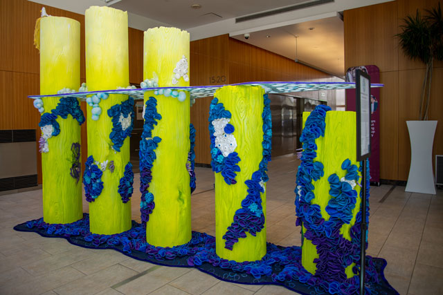
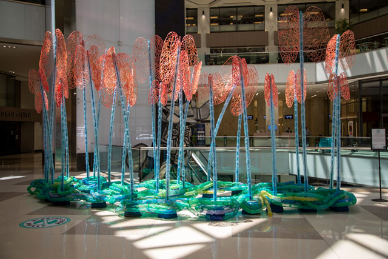
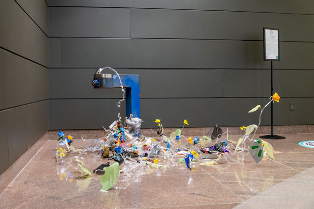
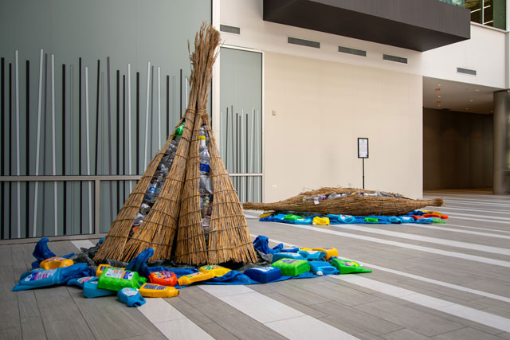

Case Studies
Plastic-free Philly
During the summer of 2023, I was tasked with a project that would help launch a marketing campaign named: Plastic-free Philly. This campaign’s goal was to get people to reduce the number of single-use plastics that each person used to reduce their carbon footprint. We would do this by selecting ten different artists, all which used plastic to create art installations. This was to show how much plastic people used on a day-to-day basis. Those installations would be displayed all around the Center City and West Philadelphia areas to bring awareness to the number of single-use plastics being used.
My role in this project was to film each artist interview, schedule those artists, edit their interviews together with b-roll from the artists to tell their story, their feelings on single-use plastics, and how people could make a change.
Not only did I create videos for each artist, but I also created slides for each project that was used during the press event for this project. The project took 2 months to complete with each video being displayed at their respective art installations. It was a tough but wonderful experience, working together with some amazing people.




ANS Website Design
July of this year, I started on the implementation of the Academy of Natural Sciences new website. This site was designed several years ago by a design agency but due to a multitude of problems arising, this site has not been implemented before July.
When the project was started, I was not very hands on with the decisions that were being made but due to budget restraints, my boss was let go and I was thrust into the position of technical lead on this project, with support from my new boss, I am closing in on completing this project. The implementation of this project started in September of this year and is ongoing. Since I took on the role of technical lead, I had the following duties:
- How to read and understand documentation and make sure that templates and components match up with the technical roadmap.
- How to follow design guidelines.
- Curated photographs to use for the new site, including replacing decades old photos, as well as writing alt text for each image.
- Reviewing and fixing pages that were imported from WordPress during a migration to ensure that they all followed the intended design.
- Working with an external partner to ensure that the site does not lose ranking with Google by using 301 and 404 redirects.
This project is ongoing but is drawing closer to wrapping up. It has been a lot but once again, I am working with great people.